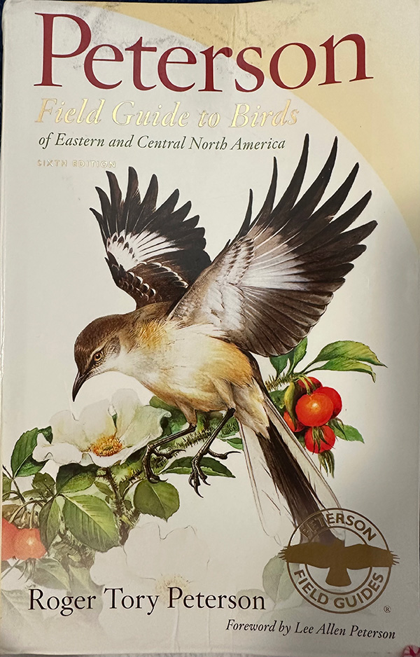

Peterson Field Guide to Birds of Eastern and Central North America
A great beginner’s guide
This review covers the Peterson Field Guide to Birds of Eastern and Central North America (6th edition), aimed at beginner to intermediate birdwatchers. The guide is a 5x8 inch paperback containing 445 pages, published in 2010. It highlights over 800 bird species and can often be found for less than $10 on second-hand sites.
The book contains numerous features that aid identification. Pages are filled with illustrations and detailed drawings of both male and female plumages. Arrows highlight important field marks, making it easier to match birds seen in the wild.
Additional features include silhouettes and a checklist for tracking your life list. The text is concise enough to read easily on the trail, and the book is durable enough to be quickly stored in a backpack. Range maps also help identify where species are typically found.
On a recent birdwatching trip, I identified five new species using this guide. The size comparisons (e.g., robin-sized or hawk-sized) are especially helpful.
However, the guide is slightly bulkier than alternatives like the Sibley Guide. Some species, such as gulls, lack full plumage variation illustrations, making identification more difficult.
Because it was published in 2010, some information is outdated. Migration patterns have changed, meaning some birds are missing while others listed are now rare in the region. Advanced birders may also find the illustrations too basic and the behavioral notes limited.
Overall: This guide is highly recommended for beginners and intermediate birders. Its low cost and ease of use make it a solid choice for casual birdwatchers.
